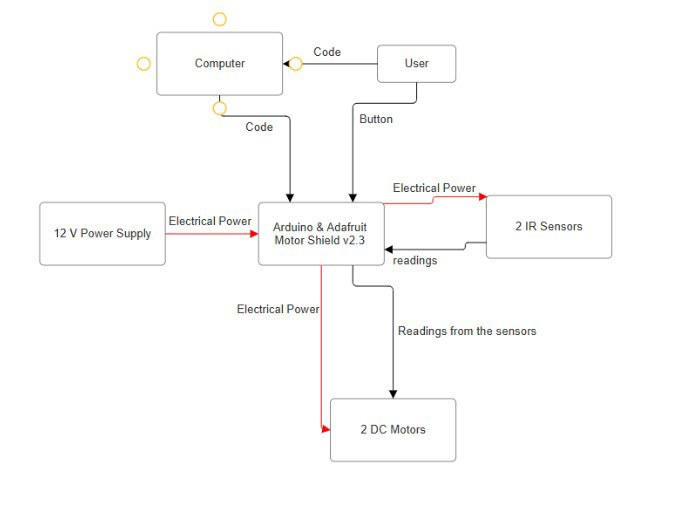

The challenge
Our team integrated sensing, motor actuation, and control so a two-wheel differential-drive robot could follow a non-circular tape course quickly and reliably. An Arduino Uno and Adafruit Motor Shield v2.3 drove two DC gearmotors, with two IR sensors measuring floor reflectivity.
Mechanical integration & sensor holders
We designed 3D-printed holders that let the IR boards slide in and out without tools while maintaining repeatable left–right spacing. A circular cable pass-through keeps the wires straight and away from the wheels; side cut-outs and the mounting pattern reuse existing chassis holes.
Four holders were installed across the front edge to support a wider field of view and multi-sensor control, although only the front two sensors were used in the tested system. Calibration led to a 7 mm standoff, which maximized tape-to-floor contrast while preserving ground clearance.


Power, wiring & resistor selection
A 12 V wall adapter feeds a split harness: one branch connects to the Arduino Uno barrel jack, while the red and black leads power the Adafruit Motor Shield v2.3 through its screw terminals. The left DC gearmotor connects to M1 and the right to M4. Both reflectance sensors use the Arduino’s 5 V supply and a common ground, with analog outputs connected to A2 and A3. The circuit, like the mounting layout, provides for four sensors; testing used two.
Each sensor uses a 200 Ω current-limiting resistor for its IR LED and a 10 kΩ pull-up for its phototransistor output. Using Ohm’s law and the values from the sensor documentation, we estimated:
- IR LED: (5 V − 1.2 V) / 20 mA ≈ 190 Ω; we used 200 Ω.
- Phototransistor pull-up: (5 V − 1 V) / 0.5 mA ≈ 8 kΩ; we used 10 kΩ.


Sensor calibration
With the robot powered and the sensors at the final 7 mm height, we logged approximately three seconds of analog readings while holding each sensor over white tape, then repeated the measurement over the surrounding floor. Tape was the on-track surface. Typical readings of approximately 950 on tape and 450 on floor gave a midpoint threshold of 700: values above it indicated tape, and values below it indicated floor.
During tuning, we checked that the tape and floor readings remained well separated across different floor patches and adjusted the threshold when they drifted. We also added delays after motion commands. Without enough delay, the robot could spin too far and make its next decision using a reading that no longer matched its position; the delays improved the consistency of tape detection.
Controller states, timing & logging
The bang-bang controller compares the left and right readings on A2 and A3 against the fixed threshold, TH = 700. Trimmed base PWM commands of 54 on the left and 78 on the right compensate for a small mechanical bias. With our motor wiring polarity, the shield’s BACKWARD command produces forward robot motion.
- Both sensors on tape: drive straight using short PWM pulse-and-stop actions.
- Only the left sensor on tape: pivot right until the off-line sensor crosses the threshold.
- Only the right sensor on tape: pivot left until the off-line sensor crosses the threshold.
- Both sensors off tape: fall back to driving straight.
Pivots use short pulses inside blocking while-loops, with a 4 ms debounce delay between pulses to reduce chatter. The main loop is paced at 8 ms, but motion helpers add short 10 ms pulse/stop intervals, so the effective cycle takes longer than 8 ms during pivots.
Each cycle logs a CSV row with time_s, left, right, MotorL, and MotorR. The motor fields are the signed PWM commands issued by the controller, with signs describing direction relative to our wiring. USB Serial was used only to collect these logs for plotting. Threshold and base-speed changes were made between runs by editing constants, recompiling, and reflashing, rather than through live tuning.


Results & next iteration
The robot followed the tape with the simple bang-bang controller and blocking pivot pulses. The combined trace showed frequent step changes in motor commands aligned with rapid sensor changes at tape edges, along with steady straight segments.
One anomaly was that one motor rarely appeared to reverse. Possible explanations were a short power-on delay that obscured an early reverse command, or a command too small to overcome the motor’s static friction. These were hypotheses from the test, rather than confirmed causes. The robot still corrected its course, with a less sharp turn.
A next iteration would replace the blocking loops with non-blocking control, add hysteresis or light smoothing near the threshold, and investigate PD control for faster corners. Widening the sensor spacing or adding a center sensor could provide a more informative error signal. We would also consider untethered power and log multiple laps to quantify repeatability.